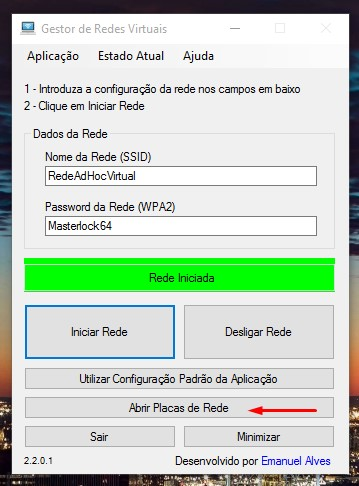
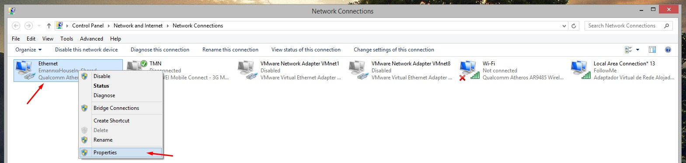
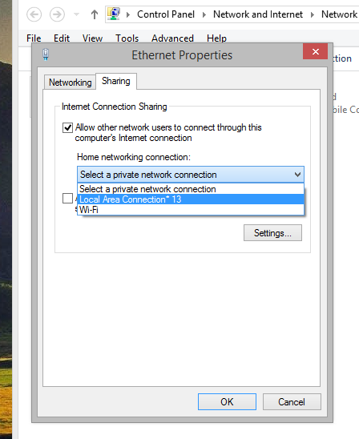

» Configurar partilha nas placas de rede
Para o sistema hotspot (rede virtual) funcionar, é preciso configurar a "fonte" da internet (placa 3G, ethernet-cabo de rede etc) para partilhar a sua ligação para a nova rede criada pelo Gestor de Redes Virtuais. Este procedimento apenas tem de ser feito UMA vez.
Para começar, inicie a rede virtual e clique no botão "Abrir Placas de Rede" existente na aplicação.

Na janela que é aberta, estão visiveis as diversas interfaces de rede instaladas no computador. Selecione as propriedades daquela que é a "fonte" da internet que prende partilhar como Wifi - neste exemplo, será a placa de rede Ethernet ("cabo de rede"). Também poderá usar a própria rede wifi que está ligado para partilhar na nova rede wifi criada pelo GRV.

Na janela que surge, clique no separador "Partilha" (Sharing) e coloque um "visto" na primeira opção que surge - "Permitir outros utilizadores ligarem-se à internet a partir deste computador" e selecione a rede criada pelo GRV - neste caso, a rede chama-se "Local Area Connection* 13" - no entanto, poderá surgir com números diferentes (Local Area Connection* 6, Ligação de Área Local* 10, Rede local 2, Rede sem fios 2 etc).

Depois de activar esta opção, clique Ok para fechar a janela e reinicie AMBAS as ligações - ou seja - desligue o cabo de rede/modem/placa 3G (a fonte da internet) e a rede virtual (botão "Desligar Rede") - e volte a ligar, primeiro a fonte da internet e depois a rede virtual - e, regra geral, estará tudo a funcionar
Em caso de dificuldade, entre em contacto comigo.